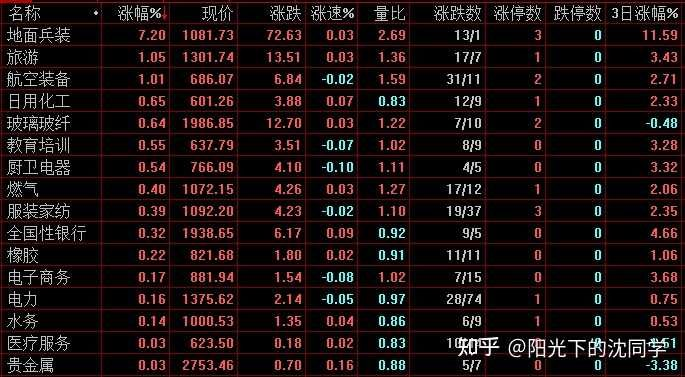
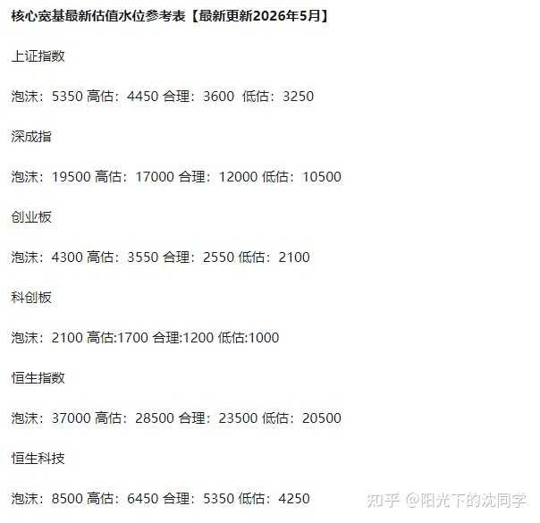
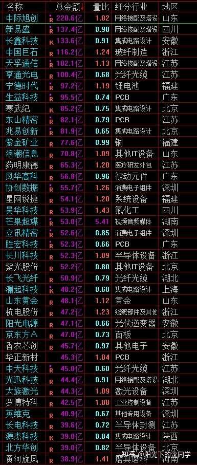
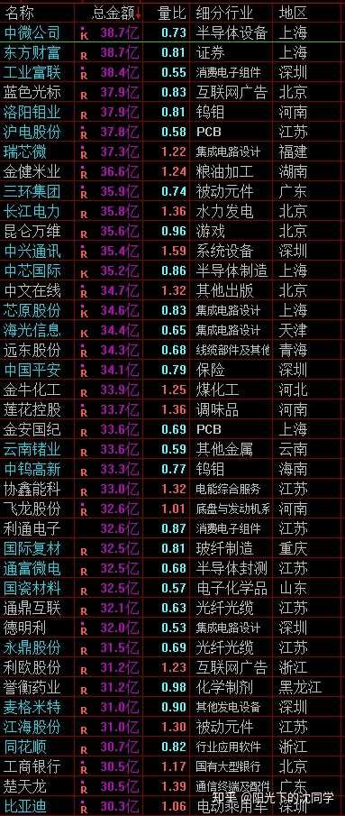
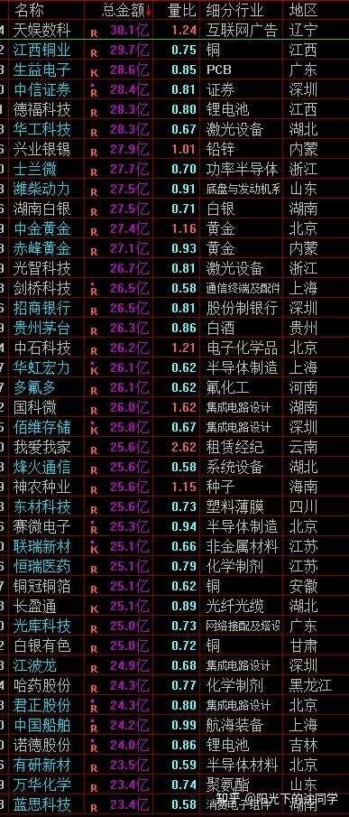

本文核心逻辑在于‘防御性资产配置’与‘逆向博弈思维’。作者认为当前市场处于存量博弈下的弱势震荡期，缺乏增量资金化解上方套牢盘。其逻辑传导链为：市场成交量萎缩->赚钱效应缺失->高位股流动性枯竭->杀跌风险加剧。因此，作者主张通过‘降低仓位+分散配置+利用杀跌机会低吸’的策略，将投资重心从‘博取短期价差’转向‘保护本金安全’，利用资产间的低相关性（如债券、红利、黄金）来平滑账户波动，实现长期复利。
现在市场上大部分个股走势是不如之前活跃的，应对这样的行情只能把握杀跌注【本质逻辑】指股价在恐慌情绪下快速下跌。在弱势行情中，这是主力清理浮筹、制造恐慌以获取廉价筹码的过程。【新手提示】不要在上涨时追涨，应在市场恐慌、个股莫名杀跌时分批布局，这才是低成本获取优质资产的窗口。的机会加仓
而且在下跌趋势+成交量比较弱的行情里面，有以下交易要点需要重视
1，
千万不要在跳空高开注【本质逻辑】指开盘价高于昨日收盘价，通常由短期情绪驱动。若成交量未持续跟进，极易形成‘缺口’，主力往往利用高开诱多出货，随后股价回落填补缺口。【新手提示】别被开盘涨幅冲昏头脑，高开往往是短线卖点而非买点。的时候去买入，很容易后面回补缺口
2，
不要在没有杀跌的时候加，即使是优质的白马蓝筹，红利资产，可能已经筑底的差不多，开始在一个区间震荡，但一样会因为行情影响，有时候莫名其妙杀跌一下，这种杀跌才是需要去耐心等待的加仓机会
3，
不要碰高位，高估值股票，尤其是中小盘股，他们在资金面越来越差的时候接盘力度很差，一旦里面的资金要出来就会杀跌很快，这种一旦买错了，止损都可能因为动作慢了一点多亏很多钱
4，
成交量弱，赚钱效应比较差，大部分个股没办法稳步走强，就一定要减少交易，看准机会再出手，平时多休息，多研究行业和企业，没有什么好机会，你过度买卖也无济于事
5，
总仓位推荐55%以下，多留现金，重视债券是目前最核心的策略
指数还会有比较长一段时间运行在3950-3650区间，只要成交量不够好，就很难化解上方套牢盘注【本质逻辑】指在更高价格买入且目前处于亏损状态的投资者。当股价反弹至其成本区时，这部分资金会有强烈的解套卖出意愿，形成巨大的抛压。【新手提示】判断行情强弱的关键在于成交量能否有效消化这些抛压，量能不足则反弹即是逃命机会。
4000以上，4150以上套牢盘是非常牢固的，没有什么特别的利好基本上不可能过去
安全一点来讲，3950以上其实就位置偏高，尽可能还是在3950-3650区间的杀跌去寻找买点
高端制造，低位的各种新兴行业优质企业，出海龙头，白马蓝筹，红利，细分业绩超预期的这些可以看看，一定选好公司，基本面和产品过硬的，杀跌慢慢买，控制好成本，胜率不会太低
指数风平浪静，尤其是3950以上，也没有什么大跌，就先休息，优化好持仓，让自己手里现金流充沛，静待行情给出高胜率机会再跟上
我们普通投资者满仓非常快，真的有什么机会不可能错过，一些一般般的每天涨涨跌跌的小机会，可做可不做，并不是说看着好像有一些机会大涨挺好做，实际上你自己多交易就知道，真的参与了挺难了
真正大部分投资者投资胜率高，尤其是短线博弈胜率高的时候，是整体行情不错，指数稳步突破，成交量稳步突破，市场很有赚钱效应的时候
这种行情下，真的会随便跟一根也赚钱，会有那种好像炒股很容易的感觉，其实就是行情好，胜率高
不是这种行情话，都难赚钱，尤其是行情不太好，市场上还有大批不便宜的品种，那一旦买错了，就是万丈深渊
大家要注意风险，不要总是每天只想赚钱
本金保得住再来赚钱的问题
你是靠本金赚钱，本金做大了股息都不少，把注意力放本金安全上面，投资会顺起来的

展示了各行业板块的涨跌幅与量比。量比接近1或小于1说明市场交投清淡，缺乏主力资金介入。涨跌数比值显示市场分化严重，多头力量仅在极少数板块（如地面兵装）有表现，大部分板块处于缩量阴跌状态，反映出当前市场缺乏合力。
每天原创不易，读者朋友千万不要忘记点赞支持一下
正所谓先赞后看，腰缠万贯
大家可以先点一波赞，我们再继续慢慢聊
祝点赞的朋友福寿无量，天天开心
昨天和大家分享了我分散配置的不同行业的仓位思考，大家可以收藏起来慢慢看
我个人做仓位控制，去选择看好的品种主要还是看是不是有上涨空间，是不是便宜，因为成本低是最大的利好
然后肯定不能孤注一掷，即使是非常稳健的金融，或者是现金流，股息不错的消费，还是非常看好的高端制造，生物医药，都不会单个方向，或者单个品种过于集中
这样才能维持整体账户的稳定盈利，某一个持仓，或者方向暂时不太好，或者暴雷了，止损还是先拿一拿都不会影响太大
美股，港股，A股，黄金，债券，个股还是ETF，都要讲究一个均衡配置
新手投资者容易亏大钱就是想博弈，全买一个东西，压力非常大，错了止损也亏不少，不止损就耽误好几年，甚至直接亏的倾家荡产
职业投资者没什么特别厉害的，就是经验比较丰富，在股市挨打比较多，自然会明白分散配置的重要性
好东西长期起得来，但不会按照你的意志去走，不是说你想买了以后大涨就大涨，即使是全球龙头，美股龙头也一样
每个资产都有自己的运行周期，你看好，配置，没有问题，但要有耐心，耐心取决于持仓的状态，满仓买了就大跌，谁都扛不住
仓位控制的好，心态就好，心态好了投资就不难，买到了好东西，暂时不太行也不会太急，大跌还可以再加一点，成本可以做下来，等到了上涨周期自然就赚钱了
你不懂得用仓位控制来保护本金安全和心态的平稳，就一定会拿不住好东西，很多回过头来看的牛股，在低位都是怨声载道的，都是无数人割肉的或者是上涨一点点就跑路的，真的可以赚到很多利润的少之又少
了解自己买的是什么很重要，让自己不会因为买错了而直接退出市场更重要
要接受自己投资会错，而且会经常错这个事实，这个是很多投资者暂时没有想明白的
因为其他行业不是这样，其他行业做好了，可能是不会错，或者错了也不会亏大钱
投资其实就是经常会错，且错误代价很高的
接受错误，长线持仓做好仓位控制，短线博弈仓位做好止损
我个人认为投资不是在追求100%正确，因为这个不存在，而是追求应对，调整，随机应变的能力
就是行情肯定会超预期的，我们的计划总是需要改变的，你能不能接受这种改变，你是怎么调整和应对的
仓位，心态能不能跟得上这些变化，这种一直可以调整的能力非常稀缺，但是投资最重要的能力
我们都会一直想证明自己有多么对，但投资时间久了就会发现，只有市场是一直对的，因为市场的变化是综合的，他就是会因为各种情况发生我们想不到的变化，就和自然一样，好像有规律，又总是超预期变化
市场是对的，我们要怎么样做到错的不要那么离谱，错了可以修正，损失不要那么大，本金保护好一点，对的时候才能本金稳步亏大
实际上就是一个亏钱一定会发生，买错一定会发生的游戏，错了怎么办，损失怎么减少，做好了，以后赚钱的时候才好办，才跟得上
把这个事情想清楚，你投资会豁然开朗
不管你投资水平怎么样，如果对市场不够重视，风险没有控制好，都很可能一波亏个大的，然后一直没办法翻身
职业投资者，投资大师什么的，他们很多都栽在杠杆上面，因为他们资金量大，水平也很高，平时很难出现全军覆没的情况
但就是一下子没有注意，对风险没有那么在意，动了杠杆，还满仓了，还买贵了，问题就会突然非常大
这就是我们聊的，不管你现在水平多高，赚了多少钱，但市场就是市场，他肯定比我们对，一旦剑走偏锋了，错误发生了就可能没办法补救
我自己理解的投资，风险就是这样，稳着来，控制好风险，不借钱，不轻易满仓，每年证转银注【本质逻辑】指将证券账户资金转入银行账户，即从股市撤资。这是投资者对市场失去信心或需要锁定利润的表现。【新手提示】当市场普遍出现‘证转银’时，说明市场流动性在流失，此时应严格控制仓位，避免成为最后接盘者。，闲钱投资，做好止损，不让自己发生亏的退出市场的错误，慢慢玩，本金一点一点做大，自然会越来越富有
永远告诉自己，我可能还需要再想一想，我需要考虑可能错误的退路，我需要出来先看看，我需要保护好本金，我需要停下来休息一下
退一步，稳一点，保持初心，初学者心态，投资才能不出大问题
这是我盈利模式的核心，所以我经常会比较早的就清仓，优化好持仓，减少交易，不是说完全找不到机会，真的要做也有机会
但不想勉强，不想去超越市场交易，整体市场不好做就不做，不去认为自己有能力超越市场的平均胜率
尽可能少赚钱，也不过度冒险
有时间停下来多看看企业，研究行业是很好的事情，总是在交易，能力进步的不会那么快，很多东西是需要你花时间去学，去看的，能力提升了再交易，才胜率会高
我最近在整理A股自选股的时候就看见了很多过去比较看好的企业，因为各种情况暴雷，也有很多过去博弈过的企业已经st或者已经退市
市场就是这样残酷，很多我们可能觉得很好的东西，以后会暴雷，你漠视风险，本金就不可能安全
最适合新手投资者，上班族，股龄10年内投资者的投资策略分享
美股还在高位震荡，拿住底仓即可，没有加仓机会
黄金这几天跌幅比较大，再跌一跌可以重新定投，不要过度在意黄金短期得失，长期看好，把握这种短期下跌机会定投即可，黄金聊过无数次，上涨别追，成本会控制不好，每次杀跌去定投，长期配置，总仓位不要高于红利和美股，预留足够长期定投的空间，这样去做黄金是长期最舒服的策略
债券非常看好，值得配置，闲钱可以先买债券，股市暂时机会不多，债券更加稳固，闲钱不要放着吃灰
红利整体估值不高，个股分化挺大，ETF成分股不同也会有估值不同，关注低位方向大跌的时候买入即可，估值高一点的可以拿住看看，不要急着加仓
价值，现金流，低波，红利这些方向都挺好，他们在不同的行情下表现不一样，低波，红利这种在熊市更强
价值，现金流在牛市更强，但长期分红，现金流都不错，分散配置，均衡配置，抓住他们杀跌机会加仓即可，都有自己的高光时刻
以上资产长期分散配置，慢慢玩，年化7%-15%问题不大，核心的企业，资产，ETF，都可以去看看，研究研究，再对比其他个股，ETF看看
不是我说他们好，他们就好，我说了不算，是他们确实长期走势，跑出来的复利成绩就是比其他好的
你可以多重模拟各种策略，就是模拟各种仓位配置思路，去跑一跑，看看1年内，3年内，5年内，8年内，10年以上是什么情况
现在各种工具都非常方便，都可以随便跑数据，可以把各种策略，战法去跑，把美股，A股，港股，全球其他核心市场作为选择，去验证各种盈利模式
非常非常方便的，大家自己去验证，我没事就喜欢这样去复盘，也可以帮助我对时间周期，怎么去调整战略有很大帮助
因为不同类型的资产就是在不同的情况下，不同的时间维度里面收益情况不一样的
你把这些搞清楚了，你就心态更好了
不会说买了债券，黄金，红利，美股这些还想着天天涨停板什么的
当然反过来，你买了热点，妖股，科技什么的，也不会赚钱了舍不得获利了结，因为他们各种数据，各种情况跑下来也会，就是都会跌回来
所以现在复盘真的很方便，这个复盘方法分享给大家
在未来AI时代，科技爆发的时代，互联网，自媒体，量化交易时代下
我认为资金面第一，大家一定要把这个放最重要的位置
然后是基本面+消息面，最后的技术面，综合的情况看
搭建自己的盈利模式，交易策略，多跑跑数据，多用各种工具，好用的大模型复盘，把各种想法和策略放进去跑一下
再结合自己的性格，家庭情况，资产情况，做一个综合选择
投资会容易很多，也非常科学，比自己瞎想好
你如果不去做这些功课，你就自己瞎想买了什么资产以后，要怎么怎么样，赚多少钱，都是空想，没有数据支持，胜率不高，且容易失望
一个策略，一个投资组合，都可以参考全球的市场去跑一跑数据，各种资产组合的搭配，不同时间节点的配置，再加入一些不同仓位控制的参数，这些跑出来的结果都很值得我们参考
大家可以记一下这些复盘方法，很重要，也很有用，会让我们有豁然开朗的感觉，也是非常科学的系统性复盘方法

提供了宽基指数的估值水位参考。通过将当前点位与‘泡沫、高估、合理、低估’区间对比，为新手提供了明确的心理锚点。这是一种基于基本面的防御性策略，旨在防止新手在估值高位盲目买入。
大家有任何投资疑问，有什么想交流的都可以付费咨询，想单纯支持一下也可以
【在知乎上我的主页咨询即可，没有任何群，不搞私下小圈子】
家庭资产长期稳健配置方案分享，仓位优化，估值分析，行业分析，心态调整，各种投资学习技巧都可以咨询
大家的支持和尊重是我创作的最大动力
感恩大家每天的付费咨询和打赏，感谢大家对知识的尊重，感谢大家对我的支持
欢迎提问
适合职业投资者，10年以上经验老股民，基本功极其扎实投资者的实战分享
继续聊实战
仓位已经优化好了，所以暂时没有交易
短线账户维持清仓，等后面有比较大杀跌再加，看好的个股都准备好了，但不急着加仓
高端制造，出海龙头，低位科技，这些是主要以后杀跌会买的
长线账户这段时间主要就是做港股加仓多一点，港股扑街比较多，而且看好的科技可能纳入恒生科技指数，这个博弈机会不想放弃，也配置了一部分仓位，选择产品好，目前估值低的做
核心持仓的港股有错杀的也加一点，估计12月之前波动都会比较大，会是比较好配置港股的机会，慢慢来
A股在中报之后把感觉不是很好的都先减仓或者卖掉一些，只留最看好的底仓不动，控制好总仓位在50%以下，预留未来加仓空间，也可以给加仓港股腾挪空间
现在大部分持仓都是现金资产为主，一般情况下不会大幅提升持仓，还是多整理整理自选股，研究企业，行业，复复盘为主，休息一下，静观其变
行情确实不好做，盲目提升仓位可能把今年好不容易赚到的钱搭进去，赚钱真的不容易，也9月份了，这个市场再亏一大波，今年证转银肯定就麻烦
所以保护好今年的胜利果实，稳住，不乱加仓，平稳度过再说
等全球市场给到机会，那时候加仓买入廉价筹码会更加安全
现在拼的就是拿得住钱的本事了，现在这种位置还一直频繁交易，肯定不是好事
我个人暂时没有很大的信心去大仓位交易，感觉挺难赚钱，不是我可以驾驭的行情



风险提示：股市有风险，入市须谨慎
今天是坚持写复盘笔记的第1514天【每日打卡】
下面是我自己多年来的一些重要的心得感悟，分享给大家，会不定期增加内容
1，
长期投资成功的关键是稳定的情绪和沉稳的性格，这些比过人的天赋更重要
2，
最终我们穷其一生获得的一切经验、知识和所有财富都需要转化为自身的品德修养，不然获得越多失去越多
自身的修养是留住各种财富最好的容器，富裕一时不难，富裕一生不易
珍惜获得的一切，保持初心、慈善、知足，让自己的德行和财富共同成长，才能方得始终
3，
古之成大事者，不惟有超世之才，亦必有坚忍不拔之志
想成为优秀的投资者一定要持之以恒，不断学习，反思，总结，在投资中获得的各种经验最终都会成为你财务自由的砖瓦
4，
再高的智商也一样会被情绪一瞬间冲垮
大部分的亏损都来源于投资者的冲动和情绪化交易，学会控制自己的情绪和心态才能长期稳定的复利
5，
富在术数，不在劳身
一定要多思考，任何时候想清楚了再交易，漫无目的的交易，只会多做多错
6，
利在势居，不在力耕
投资赚钱主要靠把握时机，没有机会就休息，多留现金
做可以让自己心安的投资，便是对于你来说最好的盈利模式
7，
谨记：贪念起，万念俱灰！
控制住了风险，利润会随之而来
富贵险中求，也在险中丢
求时十之一，丢时十之九
仓位情况【不推荐模仿】
短线博弈仓位：0%
长线+短线总仓位尽可能低于55%，这样更符合当前行情的风险程度
长线资产配置目前个人分散持有：各种债券ETF+各种核心红利ETF+美股ETF+黄金+优质REITS+长期看好的优质企业+核心ETF
美，港，A股长线+短线所有股票持仓投资方向配置比例参考：
金融：10%
消费：31%
生物医药：13%
AI产业链：7%
能源，动力：9%
高端制造：25%
周期：5%
【每3-6个月更新一次】
最新更新时间2026年9月
全文逻辑总结：在弱势震荡市中，‘不亏钱’比‘赚大钱’更重要。核心策略是：1. 严控总仓位（55%以下），预留现金流；2. 拒绝追高，利用杀跌机会分批低吸优质资产；3. 建立基于数据的复盘系统，而非凭感觉交易。新手避坑法则：远离高位中小盘股，警惕跳空高开的诱多陷阱，将投资目标从‘一夜暴富’调整为‘长期稳健复利’，保护本金是生存的唯一前提。

![[灵感正在发酵]](https://pic1.zhimg.com/v2-2637ec87f0d63fe043a33096e0fb8f5e.gif?source=1d2f5c51){kind=link}
{kind=link}
这次我要忍住尽可能晚一点加仓，希望大家监督我，我要把仓位控制做好，不再和过去一样追涨杀跌
目前我仓位65%，都是红利持仓，其他都是债券，科技和港股都清理了，股市现在加起来200万左右
如果我资金量再大一点，再稳定复利几年，我觉得仓位控制可以更好，有些股价很贵的股票买起来100股也不少钱，仓位依旧不太好控制
我看老沈仓位控制一直都很细腻，感觉老沈资金量应该比我大一些，也经常在文章里面提到喜欢证转银的钱买房子，老沈应该是已经财务自由，非常羡慕，我也要继续努力
我的港股是止损亏几个点卖的，放以前肯定拍大腿，郁闷一下午，现在毫无波澜，止损越来越果断了
以前就是舍不得止损，短线套成长线，小亏熬成大亏，最后亏得妈都不认，现在学乖了，感觉玩不来就跑，绝不恋战
股市最大的敌人，就是我们自己的手和那颗躁动的心，慢慢修炼，慢慢修炼
各种策略，投资组合，都可以参考全球的市场去跑一跑数据，各种资产组合的搭配，不同时间节点的配置，再加入一些不同仓位控制的参数，这些跑出来的结果都很值得我们参考。这个是个很好的思路。
看了一圈自己的持股，持有的哪一只都不舍得减，不管是正在盈利的还是正在赔钱的，不舍得止盈和割肉，因为目前还都看好。
但是我还是想把持仓降到50%以下，这样心里会踏实，千金难买我踏实，少赚一点就少赚一点吧，从容和安宁最重要。持股从34只减到24只了。
每日笔记
1、 情况不好，加仓一定要在杀跌的时候。
2、 总仓位推荐55%以下，多留现金，重视债券是目前最核心的策略
3、 美股还在高位震荡，拿住底仓即可，没有加仓机会
4、 黄金这几天跌幅比较大，再跌一跌可以重新定投，
5、 债券非常看好，值得配置，闲钱可以先买债券，
6、 红利整体估值不高，关注低位方向大跌的时候买入即可。
最近行情不行，除了定投着的其他都在债券苟着。
先好好学习，等后面出来了机会再跟随出手。
港股连红利都拉垮，真不行
沈同学关于房地产的股票见解很有质地，可以昨天信达卖飞了，盈利四个点，主要大前天被套6个点有点怕了，没想到连续两天涨停，还好昨天低位加仓华发，这两个处境差不多，华发也底部放量了，说明有资金参与，目前华发盈利四个点，希望这次吃两个完整涨停板，到时候过来打赏[捂脸]
红利上午富贵，下午回落，但是科技也并没有反弹[捂脸]
0